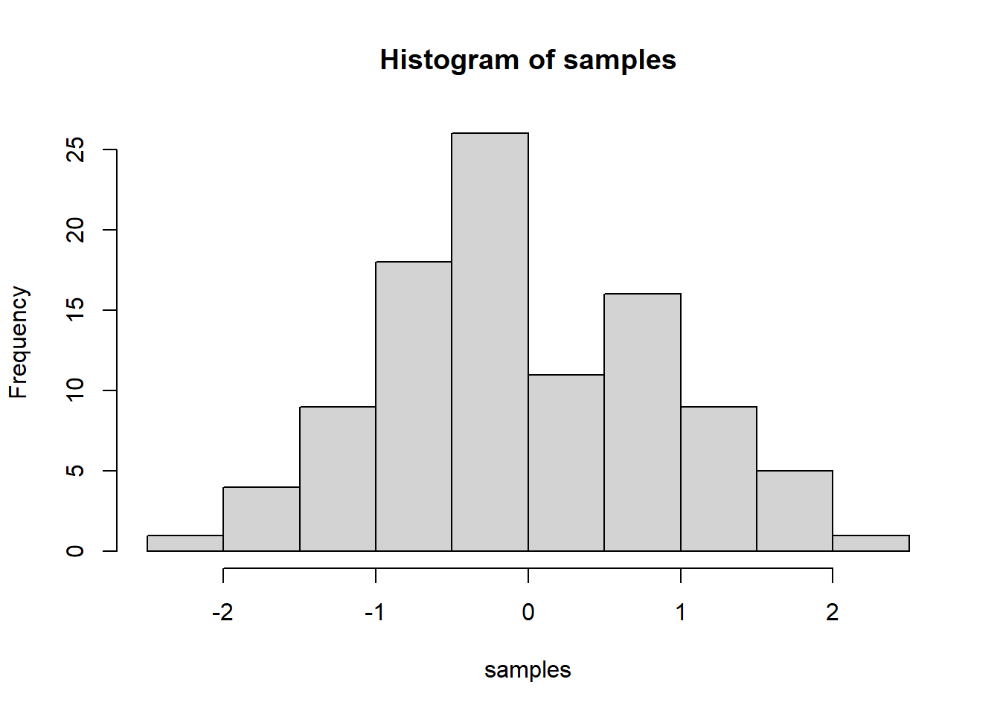

Milena’s Journal
Milena Roesch
09/04/2020
# Testing some functions
1 Olist - Challenge 1, Session 2
2020 | 9 | 3 Last compiled: 2020-09-04
The first challenge of the course consisted of two parts: 1. Sales by location and year 2. Redoing the initial analysis using english translations to the product categories
1.1 Sales by location and year
# 1.0 Load libraries ---
library("tidyverse")
library(readr)
# 2.0 Importing files ---
sellers_tbl <- read_csv(file = "00_data/01_e-commerce/01_raw_data/olist_sellers_dataset.csv")
order_items_tbl <- read_csv(file = "00_data/01_e-commerce/01_raw_data/olist_order_items_dataset.csv")
orders_tbl <- read_csv(file = "00_data/01_e-commerce/01_raw_data/olist_orders_dataset.csv")
# 3.0 Examining Data ---
glimpse(sellers_tbl)## Rows: 3,095
## Columns: 3
## $ seller.id <chr> "3442f8959a84dea7ee197c632cb2df15", "d1b65fc...
## $ seller.zip.code.prefix <chr> "13023", "13844", "20031", "04195", "12914",...
## $ seller.location <chr> "campinas, SP", "mogi guacu, SP", "rio de ja...# 4.0 Wrangling data
orders_sellers_joined_tbl <- sellers_tbl %>%
left_join(order_items_tbl) %>%
left_join(orders_tbl)
orders_sellers_wrangled_tbl <- orders_sellers_joined_tbl %>%
separate(col = seller.location,
into = c("city.seller.location", "state.seller.location"),
sep = ", ",
convert = T) %>%
mutate(total.price = freight.value + price) %>%
# Reorganize
select(-shipping.limit.date, -order.approved.at) %>%
select(-starts_with("product.")) %>% #?ends_with --> select helpers
select(-ends_with(".date")) %>%
# Rename
rename(order_date = order.purchase.timestamp) %>%
set_names(names(.) %>% str_replace_all("\\.", "_"))
#Sales by location and year
library(lubridate)
# Step 1 - Manipulate
revenue_by_loc_year_tbl <- orders_sellers_wrangled_tbl %>%
# Select columns
select(order_date, total_price, state_seller_location) %>%
mutate(year = year(order_date)) %>%
# Filter > 1.000.000
group_by(state_seller_location) %>%
filter(sum(total_price) > 1000000) %>%
ungroup() %>%
# Group by and summarize year and main catgegory
group_by(year, state_seller_location) %>%
summarise(revenue = sum(total_price)) %>%
ungroup() %>%
# Format $ Text
mutate(revenue_text = scales::dollar(revenue))
# Step 2 - Visualize
revenue_by_loc_year_tbl %>%
# Set up x, y, fill
ggplot(aes(x = year, y = revenue, fill = state_seller_location)) +
# Geometries
geom_col() +
facet_wrap(~ state_seller_location) +
geom_smooth(method = "lm", se = FALSE) +
scale_y_continuous(labels = scales::dollar) +
labs(
title = "Revenue by year and location",
subtitle = "Each location shows an upward trend",
fill = "Location"
)
1.2 Initial analysis (exercise) using english translations to the product categories
As a continuation of the previous code (same script)
# 1.0 Load libraries ----
#install.packages("readxl")
library("tidyverse")
library(readr)
library(readxl)
# 2.0 Importing Files ----
order_items_tbl <- read_csv(file = "00_data/01_e-commerce/01_raw_data/olist_order_items_dataset.csv")
products_tbl <- read_csv(file = "00_data/01_e-commerce/01_raw_data/olist_products_dataset.csv")
orders_tbl <- read_csv(file = "00_data/01_e-commerce/01_raw_data/olist_orders_dataset.csv")
translation_prod_cat_tbl <- read_excel("00_data/01_e-commerce/01_raw_data/product_category_name_translation.xlsx")
# 3.0 Examining Data ----
glimpse(translation_prod_cat_tbl)## Rows: 71
## Columns: 2
## $ product_category_name <chr> "agro_industria_e_comercio", "aliment...
## $ product.category.name.english <chr> "agro_industry_and_commerce", "food",...products_tbl## # A tibble: 32,951 x 9
## product.id product.categor~ product.name.le~ product.descrip~
## <chr> <chr> <dbl> <dbl>
## 1 1e9e8ef04~ perfumaria 40 287
## 2 3aa071139~ artes 44 276
## 3 96bd76ec8~ esporte_lazer 46 250
## 4 cef67bcfe~ bebes 27 261
## 5 9dc1a7de2~ utilidades_dome~ 37 402
## 6 41d3672d4~ instrumentos_mu~ 60 745
## 7 732bd381a~ cool_stuff 56 1272
## 8 2548af3e6~ moveis - decora~ 56 184
## 9 37cc742be~ eletrodomestico~ 57 163
## 10 8c9210988~ brinquedos 36 1156
## # ... with 32,941 more rows, and 5 more variables: product.photos.qty <dbl>,
## # product.weight.g <dbl>, product.length.cm <dbl>, product.height.cm <dbl>,
## # product.width.cm <dbl>glimpse(orders_tbl)## Rows: 99,441
## Columns: 8
## $ order.id <chr> "e481f51cbdc54678b7cc49136f2d6af7", "...
## $ customer.id <chr> "9ef432eb6251297304e76186b10a928d", "...
## $ order.status <chr> "delivered", "delivered", "delivered"...
## $ order.purchase.timestamp <dttm> 2017-10-02 10:56:33, 2018-07-24 20:4...
## $ order.approved.at <dttm> 2017-10-02 11:07:15, 2018-07-26 03:2...
## $ order.delivered.carrier.date <dttm> 2017-10-04 19:55:00, 2018-07-26 14:3...
## $ order.delivered.customer.date <dttm> 2017-10-10 21:25:13, 2018-08-07 15:2...
## $ order.estimated.delivery.date <dttm> 2017-10-18, 2018-08-13, 2018-09-04, ...#Excurse: Rename
translation_prod_cat_changed_tbl <- translation_prod_cat_tbl %>%
set_names(names(.) %>% str_replace_all("\\_", "."))
# 4.0 Joining Data ----
order_items_joined_tbl <- order_items_tbl %>%
left_join(orders_tbl) %>%
left_join(products_tbl)
order_items_engl_joined_tbl <- order_items_joined_tbl %>%
left_join(translation_prod_cat_changed_tbl)
# 5.0 Wrangling Data ----
order_items_engl_wrangled_tbl <- order_items_engl_joined_tbl %>%
separate(col = product.category.name.english,
into = c("main.category.name", "sub.category.name"),
sep = " - ",
remove = FALSE) %>%
mutate(total.price = price + freight.value) %>%
select(-product.category.name, -shipping.limit.date, order.approved.at) %>%
select(-starts_with("product.")) %>%
select(-ends_with(".date")) %>%
bind_cols(order_items_engl_joined_tbl %>% select(product.id)) %>%
select(contains("timestamp"), contains(".id"),
main.category.name, sub.category.name, price, freight.value, total.price,
everything()) %>%
rename(order_date = order.purchase.timestamp) %>%
set_names(names(.) %>% str_replace_all("\\.", "_"))
# 6.0 Business Insights ----
# 6.1 Sales by Year ----
# Step 1 - Manipulate
library(lubridate)
revenue_by_year_engl_tbl <- order_items_engl_wrangled_tbl %>%
select(order_date, total_price) %>%
mutate(year = year(order_date)) %>%
group_by(year) %>%
summarize(revenue = sum(total_price)) %>%
mutate(revenue_text = scales::dollar(revenue))
# Step 2 - Visualize
revenue_by_year_engl_tbl %>%
ggplot(aes(x = year, y = revenue)) +
geom_col(fill = "#2DC6D6") + # Use geom_col for a bar plot
geom_label(aes(label = revenue_text)) + # Adding labels to the bars
geom_smooth(method = "lm", se = FALSE) + # Adding a trendline
scale_y_continuous(labels = scales::dollar) + # Change the y-axis
labs(
title = "Revenue by year",
subtitle = "Upward Trend",
x = "", # Override defaults for x and y
y = "Revenue"
)
# 6.2 Sales by Year and Category 2 ----
# Step 1 - Manipulate
revenue_by_year_engl_cat_main_tbl <- order_items_engl_wrangled_tbl %>%
select(order_date, total_price, main_category_name) %>%
mutate(year = year(order_date)) %>%
group_by(main_category_name) %>%
filter(sum(total_price) > 1000000) %>% # If you run the code up here, R will tell you that we have 6 groups
ungroup() %>%
group_by(year, main_category_name) %>%
summarise(revenue = sum(total_price)) %>%
ungroup() %>%
mutate(revenue_text = scales::dollar(revenue))
# Step 2 - Visualize
revenue_by_year_engl_cat_main_tbl %>%
ggplot(aes(x = year, y = revenue, fill = main_category_name)) +
geom_col() + # Run up to here to get a stacked bar plot
facet_wrap(~ main_category_name) +
scale_y_continuous(labels = scales::dollar) +
labs(
title = "Revenue by year and main category",
subtitle = "Each product category has an upward trend",
fill = "Main category"
)
# 7.0 Writing Files ---- --> blended out since there is no need to save it for the purpose of the journal
#install.packages("fs")
#library(fs)
#fs::dir_create("00_data/01_e-commerce/04_wrangled_data_student/challenge1")
# 7.1 Excel ----
#install.packages("writexl")
#library("writexl")
#write_xlsx(order_items_wrangled_tbl, "00_data/01_e-commerce/04_wrangled_data_student/challenge1/order_items.xlsx")
# 7.2 CSV ----
#write.csv(order_items_wrangled_tbl, "00_data/01_e-commerce/04_wrangled_data_student/challenge1/order_items.csv")
# 7.3 RDS ----
#saveRDS(order_items_wrangled_tbl, "00_data/01_e-commerce/04_wrangled_data_student/challenge1/order_items.rds")2 My second post (note the order)
2018 | 7 | 23 Last compiled: 2020-09-04
xy
3 Adding R stuff
So far this is just a blog where you can write in plain text and serve your writing to a webpage. One of the main purposes of this lab journal is to record your progress learning R. The reason I am asking you to use this process is because you can both make a website, and a lab journal, and learn R all in R-studio. This makes everything really convenient and in the sam place.
So, let’s say you are learning how to make a histogram in R. For example, maybe you want to sample 100 numbers from a normal distribution with mean = 0, and standard deviation =1, and then you want to plot a histogram. You can do this right here by using an r code block, like this:
samples <- rnorm(100, mean=0, sd=1)
hist(samples)
When you knit this R Markdown document, you will see that the histogram is printed to the page, along with the R code. This document can be set up to hide the R code in the webpage, just delete the comment (hashtag), from the cold folding option in the yaml header up top. For purposes of letting yourself see the code, and me see the code, best to keep it the way that it is. You learn all of these things and more can be customized in each R code block.
4 The big idea
Use this lab journal to record what you do in R. This way I will be able to see what you are doing and help you along the way. You will also be creating a repository of all the things you do. You can make posts about everything. Learning specific things in R (project unrelated), and doing things for the project that we will discuss at the beginning of the Fall semester. You can get started now by fiddling around with googling things, and trying stuff out in R. I’ve placed some helpful starting links in the links page on this website
5 What can you do right now by yourself?
It’s hard to learn programming when you don’t have specific problems that you are trying to solve. Everything just seems abstract.
I wrote an introductory programming book that introduces R, and gives some concrete problems for you to solve.